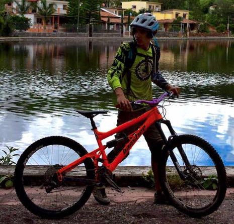
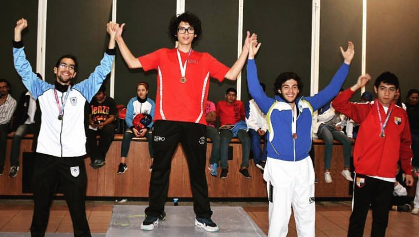

{kind=link}
Hola, me llamo Santiago, tengo 20 años y soy egresado de educazion.net (primaria, secundaria y bachillerato); actualmente curso en línea el 5to semestre de la Licenciatura en Pedagogía, y dedico mi tiempo principalmente al deporte, la música, y los estudios.
Muchas personas piensan que estudiar en línea es aburrido y te convierte en una persona antisocial, pues “siempre estás encerrado en tu casa” y “no ves a tus compañeros”. Seguido me preguntan si no me aburre estudiar solo, y se asombran cuando les cuento que después de haber estudiado desde los 8 años en mi casa decidí que estudiar en línea el nivel superior es lo que mejor se me acomoda.
Estudiar en línea no te aísla de las demás personas pues dentro de la plataforma educativa en la que estudio, al igual que en educazion.net puedo establecer comunicación y compartir información con mis compañeros y tutores (lo cual es didácticamente útil), además, estudiar en línea no es tan aburrido como uno se imagina, pues cuando ya se tienen ciertos hábitos de homschooler el tiempo de estudio se vuelve más eficiente y por lo tanto dispones de mucho menos tiempo en tu día para terminar los deberes escolares: digamos que si en una universidad presencial destinas de 6 a 8 horas de clase, más al rededor de 2 o más horas en casa para realizar tareas, ocupas menos de la mitad de esas 10 horas cuando estudias en línea; entonces nos queda todo el día libre para hacer lo que queramos.
Lo divertido de estudiar en línea no es precisamente a la hora de estudiar, sino cuando esta hora termina. Como mencionaba anteriormente, también me he dedicado a aprender música y el fruto de esto es que actualmente domino las percusiones y la guitarra, además soy cinta negra 2º dan de Taekwondo, y este año he tenido la oportunidad de conocer la naturaleza de nuestro país sobre una bici.
El último deporte en el que me he involucrado ha sido el enduro en bici de montaña, que consiste en subir y bajar de las montañas en bicicleta, y en su modalidad de competencia, consiste en descender de la montaña por las diferentes pistas, o pruebas especiales, que se destinan para la carrera; el más rápido en descender gana. Es un deporte que exige mucha dedicación y esfuerzo, pero siempre vale la pena; me ha enseñado mucho sobre tenacidad.
Estudiar en línea para mí no ha resultado aburrido, y pienso que no tiene por que resultar aburrido en ningún caso y mucho menos te convierte en una persona antisocial. Ahora que disponemos de plataformas como educazion.net que nos ayudan a hacer más eficiente y menos tardado nuestro tiempo de estudio, podemos escoger una infinidad de actividades como Taekwondo, música e instrumentos, o ciclismo de montaña, y aprovechar nuestro tiempo y sobre todo nuestros talentos, que no nos fueron dados sólo para sentarse a escuchar al profesor en el aula y hacer kilos de tarea.
 